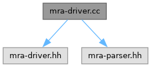

mra-driver.cc File Reference
#include "mra-driver.hh"#include "mra-parser.hh"
Include dependency graph for mra-driver.cc:

Generated on for MADNESS by
|
MADNESS 0.10.1
|
#include "mra-driver.hh"#include "mra-parser.hh"